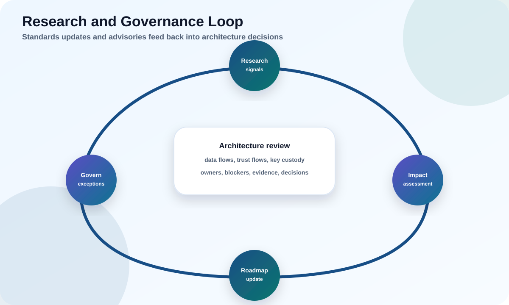

PQC is a moving field. This module is about staying current without whiplash: how to track research, keep diversity and agility, review architectures rigorously, and communicate decisions leaders can act on.
Turn research news into calm, proportionate action.
Design for algorithm diversity and backup paths.
Run a repeatable architecture review and produce accountable artifacts.

Try it: the research-to-decision loop
A new paper drops claiming an attack on a lattice scheme. Panic is not a plan. Step through the loop a mature program runs.
1
Research watch without panic
Cryptography advances by attacks; most narrow a margin rather than break a scheme.
Establish trusted sources and a triage habit. Distinguish an asymptotic/theoretical result from a practical break, a classical attack from a quantum one, and a peer-reviewed result from a preprint. The right reflex to a scary headline is "does this touch a parameter set we deploy, and what does NIST say?" — not an emergency migration.
Curate a small, high-signal watch list so you are reading the source, not the hype. Useful anchors include the NIST PQC project and its mailing list, the IACR ePrint archive (where most cryptanalysis appears first), IETF working groups (TLS, LAMPS), standards bodies relevant to your sector (ETSI, GSMA, 3GPP), and a handful of respected cryptographers. Assign someone to skim these on a cadence and log anything that names an algorithm you actually deploy.
When a result appears, classify it before you react. Is it a classical or a quantum attack? An asymptotic improvement (better exponent, still astronomically expensive) or a practical break? Against the exact parameter set you run, or a weakened toy version? Peer-reviewed or a fresh preprint awaiting scrutiny? These four questions turn a frightening headline into a single row in your risk log with a proportionate action attached.
Common pitfall
Reacting to every preprint as if it were a break, or the opposite — ignoring research entirely. Both are governance failures. Build a calibrated, documented triage.
2
Algorithm diversity and backup paths
Do not bet the entire estate on one mathematical assumption.
Most standardized PQC (ML-KEM, ML-DSA, Falcon) rests on lattice problems. That is well-studied, but concentration is a risk. This is exactly why NIST advanced HQC (code-based) as a backup KEM and standardized SLH-DSA (hash-based) alongside lattice signatures. A resilient architecture can adopt a differently-founded backup if it was built with agility.
Lattice
ML-KEM, ML-DSA, Falcon. Efficient, the default choice.
Hash-based
SLH-DSA. Conservative signatures resting only on hash security.
Code-based
HQC. Backup KEM on a different assumption.
Why does resting everything on one math family feel efficient but is actually fragile? Because a single breakthrough — a clever new attack on lattice problems, say — would weaken every system you built, all at once, with no fallback. History is full of cryptographic assumptions that looked unbreakable for decades and then bent (MD5, SHA-1, and 512-bit RSA all had their day). Nobody expects lattices to fall, but "we did not expect it" is exactly the scenario diversity exists to survive. Keeping a differently-founded backup is cheap insurance against a low-probability, high-impact event.
Everyday analogy
It is the reason a careful investor does not put every dollar in one stock, however good. The point is not that the stock is bad — it is that a single surprise should never be able to wipe out the whole portfolio. Algorithm diversity is portfolio thinking applied to trust.
Takeaway
Diversity is only useful if agility lets you switch. Design so a family can be swapped without re-architecting.
3
Architecture review method
A repeatable review beats ad-hoc opinions. Ask the same questions of every design.
Jobs & data: which cryptographic jobs, protecting what, for how long?
Algorithms & parameters: exact families, parameter sets, and hybrid modes — with algorithm identifiers stored?
Agility: can algorithms/parameters/providers change without a rewrite?
Ecosystem: every verifier, client, middlebox, and hardware dependency identified?
Failure & rollback: downgrade protection, monitoring of negotiated groups/verify failures, and a tested rollback?
Evidence: validation, test vectors, and interop results captured?
Concrete example
A review of a "PQC-ready" service finds hybrid TLS enabled but no stored algorithm identifiers and no rollback path. Verdict: not agile, not production-ready — fix agility and rollback before sign-off.
The value of a fixed question set is that it removes personality from the review. Without it, whether a design passes depends on which reviewer showed up and how much they happened to care about, say, rollback that day. With it, every design faces the same six questions, so a "PQC-ready" stamp means the same thing across the whole organization and over time. That consistency is what lets you compare systems, delegate reviews to less senior staff, and defend a sign-off months later when someone asks why a service was approved.
Turn the questions into a scorecard
Convert the six review areas into a short rubric — for each, mark pass, gap, or blocker with a one-line justification. A design with any "blocker" cannot ship; a design with "gaps" ships only with an owned, dated remediation plan. This turns a subjective conversation into a repeatable gate that a program office can actually run at scale.
4
Communicating PQC decisions
A decision no one understands or owns will not survive contact with reality.
Produce a readiness artifact that states, in plain language: what was assessed, what was decided, why, who owns it, what residual risk remains, and when it will be re-reviewed. Match the message to the audience — engineers need parameters and interop data; executives need risk, cost, timeline, and accountability. Avoid both false confidence and vague doom.
Takeaway
Accountable, plain-language artifacts are what turn PQC from a perpetual discussion into a governed program with an owner and a date.
5
A crypto-agility maturity model
"Are we agile?" is too vague to govern. A maturity ladder makes it measurable.
Give each system a maturity level so you can report progress and set targets. Most organizations start scattered across Levels 0–1 and aim to pull their Tier-1 systems up to Level 3+ during the migration. The point is not to reach Level 4 everywhere — it is to know where each system sits and to raise the ones that matter.
Crypto-agility maturity — climb it deliberately
Level 3 — "swap algorithms by configuration, with algorithm IDs stored" — is the realistic target for important systems. Level 4 adds continuous monitoring and the research-to-decision loop from this module.
Practice
Add a maturity-level column to your CBOM. Now "improve agility" becomes a concrete, trackable goal per system, and leadership can see the estate climbing the ladder over time.
6
The readiness artifact, section by section
The deliverable of governance is a short, honest document anyone can act on — here is the template.
A readiness artifact is not a 60-page report; it is a one-to-two page record per system (or per decision) that makes the reasoning auditable. Use the same sections every time so reviewers know exactly where to look and nothing important is quietly omitted.
Section
What it captures
Scope
Which system/decision, which cryptographic jobs, and the data it protects
Current state
Exact algorithms, parameters, versions, and dependencies (from the CBOM)
Target & decision
Chosen algorithms/hybrid mode, maturity level, and why
Evidence
Validation, test vectors, interop results, monitoring of negotiated groups
Residual risk
What is still exposed, blocked, or uncertain — stated plainly, no false confidence
Ownership & review
Named owner, who accepted the risk, and the re-review date
Concrete example
A one-page artifact for the external VPN reads: scope (VPN key exchange, 10-year traffic); current (classical IKEv2); target (hybrid ML-KEM, Level 3, HNDL priority); evidence (interop tested, negotiated-group logging live); residual risk (vendor firmware limits pure-PQC until Q2, segmented as mitigation); owner (Network Security), re-review in 6 months. Anyone can now see what was decided and why.
Takeaway
If you cannot fill in "residual risk" and "owner," you have not finished the decision. Those two lines are what make governance real rather than decorative.
Hands-on labs
Decide first, then reveal.
Lab 1 · The scary preprint
A non-peer-reviewed preprint claims a break of a lattice scheme; leadership is alarmed.
What is your triage, in order?
Recommended answer Capture the precise claim (scheme, parameters, model, peer-review status); check whether you deploy that exact parameter set; check NIST/standards response; decide a proportionate action (usually monitor); communicate calmly with residual risk and a re-review date. Panic migrations are themselves a risk.
Lab 2 · All-lattice estate
Your architecture standardized entirely on lattice-based PQC.
What is the concern and the mitigation?
Recommended answer Concentration risk on one assumption family. Mitigation: keep agility so you can adopt a differently-founded backup (SLH-DSA for signatures, HQC for KEM) without re-architecting, and identify which systems would switch first if lattice confidence dropped.
Lab 3 · Sign-off request
A team asks you to sign off a service as "PQC-ready."
What must the artifact contain before you sign?
Recommended answer Jobs/data/lifetime, exact algorithms/parameters/hybrid mode with stored algorithm IDs, agility evidence, full ecosystem/verifier list, downgrade protection + monitoring + tested rollback, and validation/interop evidence — plus a named owner, residual risk, and re-review date.
Lab 4 · Rate the maturity
A service runs hybrid TLS, but algorithms are hard-coded, there are no stored algorithm IDs, and no one monitors the negotiated group.
What maturity level is it, and what is the next step up?
Recommended answer It is Level 2 (hybrid-capable) at best — it can run PQC, but it is not Level 3 "agile" because it cannot swap algorithms by configuration and stores no algorithm IDs. The next step is to introduce the provider abstraction and algorithm IDs (reach Level 3), then add negotiated-group monitoring toward Level 4.
Lab 5 · The missing lines
A readiness artifact is complete except that "residual risk" and "owner" are left blank.
Is it ready to sign?
Recommended answer No. Without a named owner who accepts the risk and an explicit statement of what remains exposed, the decision is not accountable — it is decoration. Those two lines are the whole point of governance; fill them in (even if residual risk is "none known, re-review in 6 months") before sign-off.
Knowledge check
Score 70%+ to mark this module complete.
Score: 0/0
Primary sources
Educational; anchor governance in primary standards.